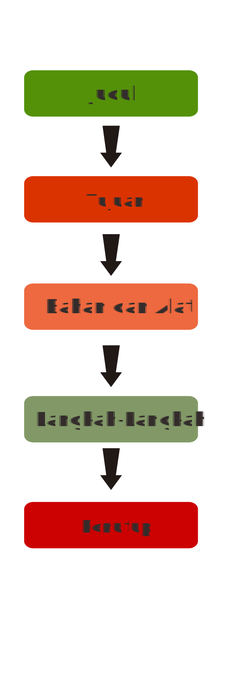

Teks Prosedur.
Bergerak untuk bangkit

Apa Itu Teks Prosedur?
Teks Prosedur adalah teks yang berisi langkah-langkah yang harus ditempuh untuk mencapai tujuan yang diinginkan dan terdapat penjelasan/keterangan dalam langkah tersebut
Apa Saja Struktur
Teks Prosedur?

-
1
Judul
Judul pada teks prosedur ini diartikan ialah sebagai suatu aktivitas atau kegiatan yang akan di buat atau dilakukan -
2
Tujuan
Tujuan pada teks prosedur adalah pengantar umum sebagai penanda apa yang akan dibuat atau dilakukan dan motivasi dalam melakukannya -
3
Bahan dan Alat
Berisi mengenai rincian bahan dan alat yang digunakan dengan ukuran yang akurat -
4
Langkah-langkah
Berisi langkah melakukan sesuatu dengan urut secara per tahap -
5
Penutup
Penutup Berisi penekanan pada keuntungan dan ucapan selamat melakukan sesuatu
Apa Saja Kaidah Kebahasaan
Teks Prosedur?
Semangat mengahadapi New Normal? Boleh kok, asal tetap patuhi protokol kesehatan ya! Seperti yang kita ketahui penerapan New Normal membuat kita menjadi lebih longgar untuk beraktivitas di luar rumah, namun kita juga harus ingat bahwa saat ini pandemi masih berlangsung. Kita turut andil dalam menekan penyebaran virus Covid-19 ini, maka dari itu patuhi protokol kesehatan sebagai bentuk cinta kita terhadap tanah air. Terapkan protokol berikut jika masih ingin selamat dari eliminasi alam ini:
Menggunakan konjungsi temporal
Contoh: selanjutnya, berikutnya, kemudian, lalu, dan setelah itu.
Menggunakan kata kerja imperatif, kata perintah, dan kata larangan
Contoh: tuangkanlah!, jangan
Menggunakan verba material dan tingkah laku
Verba material merupakan sesuatu yang mangacu pada tindakan fisik, Sedangkan verba tingkah laku merupakan tindakan yang dilakukan dengan ungkapan
Menggunakan partisipan manusia
Merupakan semua manusia yang ikut serta dalam teks prosedur tersebut
Terdapat bilangan sebagai penanda urutan
Terdapat kalimat interoatif dan kalimat deklaratif
Yaitu kalimat yang berisikan pertanyaan dan pernyataan